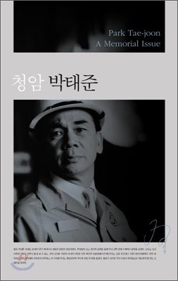

저자 이대환출판사 아시아발간일 2012년 3월 21일

책소개
이 책은 청암 박태준의 정신을 기억하고 전승하려는 시도이자, 그의 유택에 바치는 꽃이다.
『청암 박태준』은 대한민국의 철강왕이었던 박태준의 타계 이후 뜨거웠던 추모의 마음을 모으고, 기억하고자 만들어진 책이다. 그를 애도하는 마음은 세대와 이념을 넘어 하나였으며, 해외에서도 청암의 타계 뉴스를 토픽으로 전했다. 그를 향한 국내외의 다양한 헌사는 그가 조국에 얼마나 큰 공헌을 한 인물인가를 다시금 짚어보게 했다.
많은 이들이 그가 오늘날 세계 최고의 철강회사인 포스코의 창업자이면서도 청렴했고, 국가와 시대를 위해 헌신했다는 점에 주목했다. 평전 『박태준』의 저자인 이대환 소설가는 이 책에서 박태준의 최고 매력은 통속을 거부하고 정신적 가치를 추구하는 것이라고 말한다. 또한 고인이 세계 최고 철강 회사의 회장을 지냈으면서도 포스코 주식을 한 주도 받지 않고 청빈하게 살아갔다는 일화 등을 들려주며 고인의 청렴함을 들려준다.
연세대 사회학과 송복 명예교수는 이 책에서 '태준이즘'을 주창한다. 그는 이즘 형성의 3요소로 사상, 리더십, 업적 세 가지를 꼽으며 청암 박태준이 이에 얼마나 적합한 인물인가를 연구논문으로 밝히고 있다. 그 외에는 조정래와 전상인의 추모사, 박태준의 마지막 연설 등이 담겨 있으며, 정준양의 조사, 이대환의 시론, 전영기의 행장 등이 수록되어 있다. 한영대역으로 출간되어 해외 독자들도 쉽게 읽을 수 있다.
<본문 중>
“고인(박태준)은 우리나라 경제의 토대를 만드신, 우리 시대의 거목이시다.” _새누리당 비상대책위원장 박근혜 (본문 10쪽)
“우리 민족사에서 수난의 식민지 시대를 지울 수 없듯이 경제발전사도 지울 수 없다. 그 보람찬 경제 발전사 위에서 가장 크고 밝게 빛나는 인물이 박태준이다.”_소설가 조정래 (본문 10쪽)
“고인(박태준)은 강철같은 이미지이지만 마음은 따뜻하고 넓은 품을 가진 분이다.”_서울시장 박원순 (본문 10쪽)
“박태준이 작고하고 영결식 날까지 닷새 동안 일반 시민을 포함해 각계 조문객 8만7천여 명이 서울, 포항, 광양 등 전국 일곱 곳의 분향소를 찾았다. 우리 사회는‘세종대왕이 다시 와도 두 손 들고 떠날지 모른다’라는 자조적 농담까지 나올 만큼 갈등과 반목이 심하다. 김수환 추기경, 성철 스님, 한경직 목사 등 극소수 원로를 빼면 이번만큼 범국민적 추모 열기가 뜨거웠던 적은 드물었다.”
_《동아일보》, 2012. 1. 5. 저널리스트 권순활 (본문 11쪽)
특히 해외에서도 청암의 타계 뉴스를 연일 토픽으로 전했다. 그를 향한 국내외 헌사는 그가 조국에 얼마나 큰 공헌을 한 인물인가를 다시금 짚어보게 한다. 많은 이들이 그가 오늘날 세계 최고의 철강회사인 포스코의 창업자이면서도 청렴했고, 국가와 시대를 위해 헌신했다는 점에 주목했다.
“박태준은 철강 산업에 국한된 인물이 아니라 국가 전체를, 적어도 동북아 내지는 태평양시대를 생각하고 있었다. 무엇보다 그는 청렴했다.” _전 일본 수상 후쿠다 다케오(본문 8쪽)
“박태준은 위대한 사람이다. 유럽인들 중에서 그처럼 자기 나라의 경제에 헌신적으로 일한 사람은 없다.” _전 오스트리아산업주식회사 회장 유고 세키라(본문 9쪽)
“가장 신뢰할 수 있는 파트너인 박태준은 조국을 근대화하겠다는 일념으로 일하는 사람이다.” _전 오스트리아 국립은행 총재 헬무트 하세크 (본문 10쪽)
“박태준은 헌신적이고 목적의식이 뚜렷한 전문적인 관리자이며 지도자라고 느꼈다. 그는 내가 가장 존경하는 사람이다.” _전 호주 BHP그룹 회장 브라이언 로톤 (본문 10쪽)
찬사에 가까운 이러한 말들은 청암이 단지 성공한 기업인이기만 했다면 결코 어울릴 수 없는 껍데기에 불과할 것이다. 그의 동료이자 후배이며 현재 포스코 회장인 정준양의 조사 「근대화가 기억하는 가장 아름다운 이름」에서 청암이 이룩한 일들이 찬사로 그칠 만한 일이 아님을, 그가 남긴 무형과 유형의 유산이 이 시대 남겨진 사람들에게 공적 자산임을 예감하게 한다.
흔히 사람들은 인물의 업적만을 기억하는 습관이 있습니다. 잘못된 습관입니다. 저희가 바로잡겠습니다. ‘당신의 무엇이 탁월한 위업을 성취하게 했는가?’ 이 질문을 통해 당신의 정신세계를 체계적으로 밝혀내서 우리 사회와 후세를 위한 무형의 공적 자산으로 환원할 것이며, 그 가운데 저희가 맞을 난제의 해법을 구할 것입니다. _정준양 포스코 회장 (본문 46쪽)
한국 산업화의 성공을 이끌 수 있었던 가장 중요한 토대가 된 철강신화
그 눈부신 신화를 이뤄내고도 집 한 채 남기지 않은 청렴했던 이 시대의 리더
1997년 초여름 고인을 처음 만나 부음을 알린 날까지 고인과 “숱한 시간을 함께 보내며 그의 생애와 사상과 추억에 대한 온갖 대화를 나누”었던 평전 『박태준』의 저자인 이대환 소설가는 박태준이 일으킨 기적의 정신을, 신화의 장면들을 또렷하게 보여준다.
내가 지켜본 박태준의 최고 매력은 무엇인가? 지장, 덕장, 용장의 리더십을 두루 갖춘 그의 탁월한 능력인가? 흔히들 그것을 꼽는다. 나도 흔쾌히 인정한다. 그러나 그것을 최고 매력으로 꼽진 않는다. 내 시선이 포착한 그의 최고 매력은‘정신적 가치’를 가치의 최상에 두는 삶의 태도였다. 그의 삶은 늘 통속을 거부했다. 통속적 계산을 경멸하는 작가만큼 치열하게 자기 신념의 정신적 자계( ?)에서 벗어나지 않았다. 주인공의 요청이나 부탁이 아니었건만 작가 스스로 평전을 쓰게 만드는 그 매력을, 그는 나에게 연인의 향기처럼 풍겼다. (본문 76쪽)
포스코 ?공의 장면에서 그가 일으킨 감동적인 일화는 저 유명한 ‘제철보국’과 ‘우향우’이다. 어려운 단어가 아니다. 제철보국이란 포항제철을 성공시켜 나라에 보답하자는 것이며, 우향우란 오른쪽으로 돌아 나가자는 군대제식훈련의 용어이다. 그러나 둘은 박태준의 정신 속에서 짝꿍으로 맺어지자 어마어마한 정신적 무장으로 거듭나서 포스코를 ‘성공의 고지’로 밀어 올리는 원동력이 되었다. (본문 78쪽)
박태준은 일류국가의 밑거름이 되려는 신념을 ‘포스텍’ 설립에도 눈부시게 발휘했다. 1985년이었다. 새로 시작한 광양제철소 건설에 들어갈 자금도 엄청난 규모였지만 그는 과감하고 단호하게 한국 최초 연구중심대학 설립을 밀어붙인다. (본문 82쪽)
포스코, 포스텍과 포스코의 학교들을 통해 박태준은 제철보국?교육보국 사상을 실현했다. 일류주의도 실현했다. 또한 그것은 일류국가의 토대구축에 지대한 공헌이 되었다. 과연 그의 인생을 한 문장에 담을 수 있을 것인가?
〈생존의 길을 찾아 일본으로 들어간 아버지의 뒤를 좇아 현해탄을 건너갔던 수많은 식민지 아이들 가운데, 사춘기를 벗어난 무렵에 해방된 고향으로 돌아와 빈곤에 허덕이는 신생독립국의 어른으로 성장한 다음, 유소년기에 어쩔 수없이 익혔던 일본어와 일본문화로써 가장 훌륭하고 가장 탁월하게조국에이바지한인물은박태준일것이다.〉
이 문장에다 ‘신문명과 신학문을 배우기 위해 현해탄을 건너갔던 수많은 청년학도’를 집어넣어도 결론은 달라지지 않을 것이라고, 나는 판단한다. (본문 83쪽)
고인이 세계 최고 철강 회사의 회장을 지냈으면서도 포스코 주식을 한 주도 받지 않고 청빈하게 살아갔다는 일화는 이미 유명하다. 포스코나 포스텍 등과 관련이 없는 일반 시민들조차 그를 추모하고, 지금까지도 묘소를 참배하는 사람들이 줄을 잇는 가장 큰 이유가 그가 비리로 얼룩진 이 세상에서 진정으로 시대의 귀감이 되는 인물이기 때문일 것이다. 그러한 현상과 그 이유는, 고인의 정신세계와 함께 체계적으로 연구되어야 마땅할 것이다.
불의와 타협 않는 강직함, 제철보국·교육보국의 사명감
시대에 귀감이 되고 자산이 된 그의 정신세계, 그의 정신과 실천은 “태준이즘”이다
태준이즘은 가능한가. 포항종합제철주식회사(이하 포스코)를 창업한 박태준 회장의 이름 뒤에 이즘(ism)을 붙인 ‘태준이즘’이라는 명명이 영국의 대처리즘, 미국의 레이거니즘처럼 가능한가. 그처럼 거부 없이 수용되고 저항 없이 소통되는 사상 유형이나 지식 체계 혹은 사고방식이나 실행모드가 될 수 있는가. _송복 (본문 135쪽)
연세대 사회학과 송복 명예교수는 「특수성으로서의 태준이즘 연구」에서 “태준이즘”을 주창한다. 그는 이즘 형성의 3요소로 사상, 리더십, 업적 세 가지를 꼽으며 청암 박태준이 이에 얼마나 적합한 인물인가를 연구논문으로 밝혔다. 모든 것이 다 갖추어졌지만 특히 고인이 이룩한 업적에 대해서는 단순한 성과가 아니라, “대성취”라고 말한다. “누구에게나 이론의 여지없이 받아들여지는 대성취”를 통해 박태준의 정신은 태준이즘으로 완성된다는 것이다.
성취는 해내는 것이다. 우리말에 ‘해내는 것’은 첫째로 어려운 일, 감당하기 힘든 일, 누가 봐도 안 된다고 생각하는 일을 잘 해낸다는 것이고, 둘째로 그것은 달리 생각할 여지도 없이 잘 당해내고 잘 이겨내서 놀랍도록 높은 성적을 낸다는 의미다. 한자어의 성취는 그렇게 해서 목적한 바를 달성한다는 것이다. 우리말의 ‘해낸다’는 말이든, 한자어의 성취든, 그 핵심에는 목적이 있고 그 목적을 가능한 수단을 다 동원해서 이룩한다는 공통적 의미가 있다. 그러나 여기서 말하는 해내는 것, 목적달성하는 것의 그 성취는 흔히 말하는 그런 성취가 아니라 대성취다. 도저히 해낼 수도 없고 세울 수 없는 그런 대성취다. _송복 (본문 150쪽)
저자소개
저자 : 이대환
영일만 갯마을(현 포항제철소)에서 나고 자랐다. 중앙대학교 문예창작과에 재학 중인 1980년(22세) 국제PEN클럽 한국본부가 주관한 장편소설 현상 공모에 당선되고, 1989년 『현대문학』 지령 400호 기념 장편소설 공모에 당선되어 작품활동을 본격화했다. 소설집 『조그만 깃발 하나』와 『생선 창자 속으로 들어간 詩』 이후 지난 십여 년 동안 단편소설을 쓰지 않은 가운데 『겨울의 집』, 『슬로우 불릿』, 『붉은 고래』(전3권) 등 전작 장편소설과 현재 한국 경제계에서 존경받는 원로인 박태준 포스코 명예회장의 평전 『박태준』을 발표했다. 2008년에 중편 소설집 『이 즐거운 세상』과 장편소설 『큰돈과 콘돔』을 내놓는다. 현재 계간문예지 『아시아』 발행인을 맡고 있다.
목차
책을 내며| 이대환
‘박태준’을 말하다
포스텍에 새겨진 미래 세대와의 약속
신념의 나침반
마지막 연설: 우리의 추억이 역사에 별처럼 반짝입니다 | 박태준
조사: 근대화가 기억하는 가장 아름다운 이름 | 정준양
추모사: 참된 인간의 길을 보여 준 우리의 사표 | 조정래
추모사: 보국과 위민의 선각자 | 전상인
시론: 박태준의 길, 젊은이의 길 | 이대환
연구논문: 특수성으로서의 태준이즘 연구 | 송복
행장: 짧은 인생 영원한 조국에 바친 박태준: 박태준 1927∼2011 | 전영기
연보
(영문)
Preface | Lee Dae-hwan
Memories of Park Tae-joon
A Promise to Future Generations Carved on POSTECH
The Compass of Belief
The Last Address: Our Beautiful Memories Are Sparkling Like Stars in History | Park Tae-joon
Memorial Address: The Most Beautiful Name Remembered from Korea’s Period of Modernization | Chung Joon-yang
Eulogy: An Upright Man and the Light of Our Times | Jo Jung-rae
Eulogy: A Pioneer of Patriotism and True Populism | Jun Sang-in
Essay: Park Tae-joon’s Road, a Young Man’s Road | Lee Dae-hwan
Article: A Study on Taejoonism as a Principle | Song Bok
Records of the Life of the Deceased: Park Tae-joon, A Life Dedicated to his Eternal Fatherland, 1927-2011 | Chun Young-gi
Chronology

이 글은 구 홈페이지에서 옮겨온 것입니다. 원문 보기